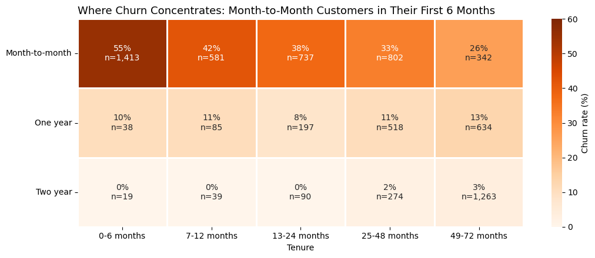

Telecom Churn Modeling
Machine learning model churn analysis, including Logistic Regression and Random Forest.
- 26.6% of 7,032 customers churned, about $139K in monthly charges
- Month-to-month customers churn at 42.7% and make up 88.6% of churners
- Logistic regression catches 78.6% of churners (ROC AUC 0.833); 655 high-risk active customers flagged for outreach

View Project